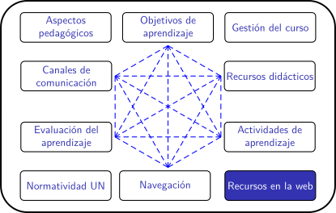
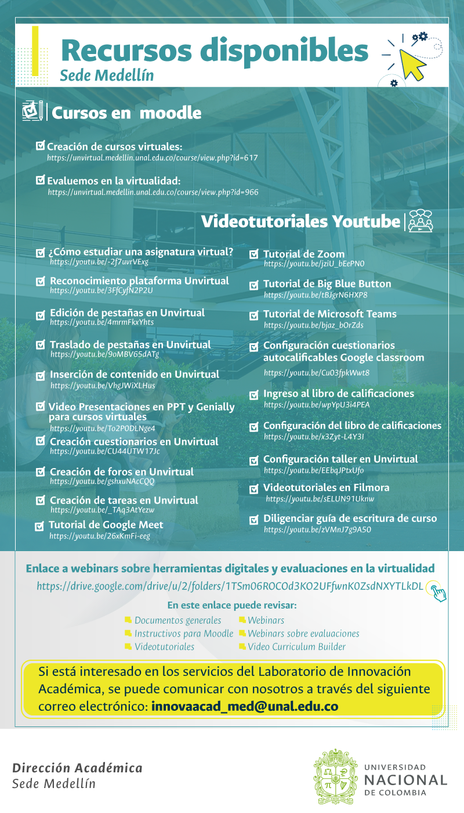

Planificación de clases remotas en la UNAL (periodo 2020-02)
Laboratorio de Innovación Académica de la sede Medellín
Laboratorio de Innovación Académica de la sede Medellín
El profesor Juan Carlos Ochoa, Director Académico de la sede Medellín, presenta el Laboratorio de Innovación Académica:

Recursos disponibles
Cursos en Moodle:
Videotutoriales Youtube:
- ¿Cómo estudiar una asignatura virtual?
- Reconocimiento plataforma Unvirtual
- Edición de pestañas en Unvirtual
- Traslado de pestañas en Unvirtual
- Inserción de contenido en Unvirtual
- Presentaciones en PPT y Genially para cursos virtuales
- Creación cuestionarios en Unvirtual
- Creación de foros en Unvirtual
- Creación de tareas en Unvirtual
- Tutorial de Google Meet
- Tutorial de Zoom
- Tutorial de Big Blue Button
- Tutorial de Microsoft Teams
- Configuración cuestionarios autocalificables Google Classroom
- Ingreso al libro de calificaciones
- Configuración del libro de calificaciones
- Configuración taller en Unvirtual
- Para videotutoriales en Filmora
- Diligenciar guía de escritura de curso
Además:
- Enlace a webinars sobre herramientas digitales y evaluaciones en la virtualidad
En este enlace puede revisar:
1. Documentos generales
2. Instructivos para Moodle
3. Videotutoriales
4. Webinars
5. Webinars sobre evaluaciones
6. Curriculum Builder - Si esta interesado en los servicios del Laboratorio de Innovación Académica, se puede comunicar con nosotros a través del siguiente correo electrónico: innovaacad_med@unal.edu.co
Reflexión
- ¿Cuál de los videotutoriales ofrecidos por el Laboratorio le parece más útil? Participe en el foro.
Obra publicada con Licencia Creative Commons Reconocimiento Compartir igual 4.0